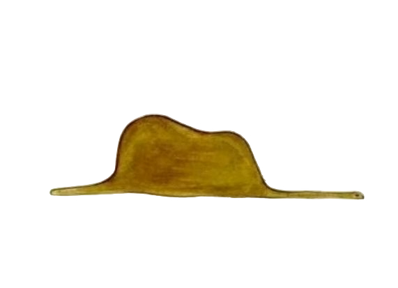

The Narrator (The Aviator)
The aviator is the narrator of the story and at the same time the voice of the author. The aviator is a little naive and had a great imagination when he was a child, which is why he so quickly and directly connects with the little prince. He represents a tamed loneliness and he is the ambassador of reality. He crash-lands in the Sahara and befriends the prince while working on his engine.
